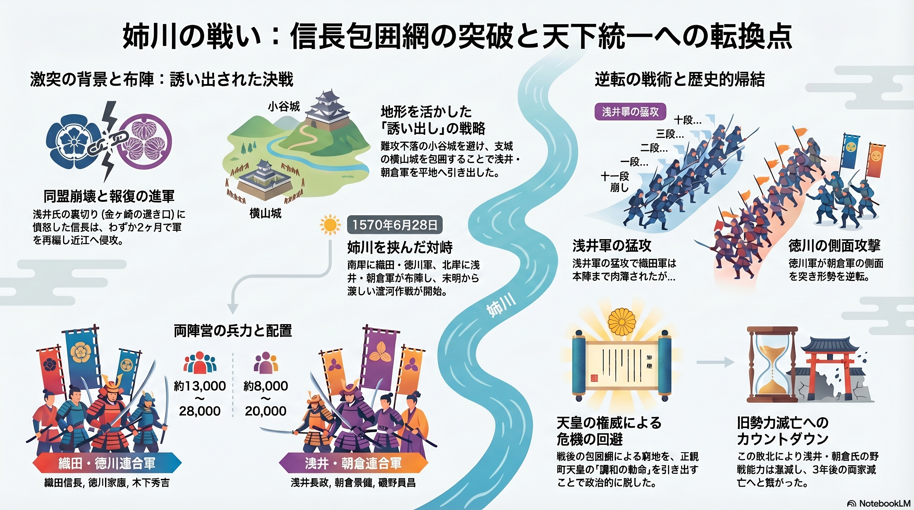

「金ヶ崎の退き口」という絶体絶命の危機を脱した織田信長が、わずか2ヶ月で軍を再編し、浅井・朝倉連合軍との決戦に挑んだ「姉川の戦い」の構造を図解しています。
● 誘い出しの戦略： 難攻不落の小谷城を避け、支城の横山城を包囲することで、浅井・朝倉軍を野戦（平地）へと引きずり出した信長の軍事的合理性を解説しています。
● 激闘の戦術プロセス： 浅井軍による伝説的な猛攻「十一段崩し」に対し、織田軍がいかに本陣近くまで肉薄されたか、そして徳川軍の側面攻撃がいかに形勢を逆転させたかという、逆転のドラマを視覚化しました。
● 歴史的転換点： 戦後の信長包囲網という窮地を、正親町天皇の「調和の勅命」を引き出すことで政治的に脱したプロセスや、この敗北が後の浅井・朝倉両家滅亡へのカウントダウンとなった歴史的帰結をまとめています。
兵力差だけでは語れない、戦国三英傑（信長・家康・秀吉）が揃い踏みした決戦の熱量とその後の影響を多角的に理解できる資料となっています。